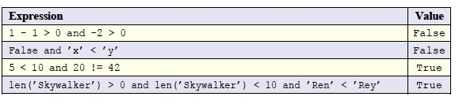
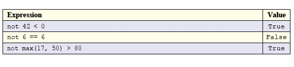
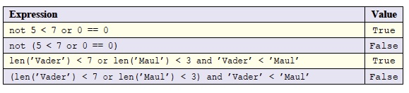

Logical operators (also called Boolean operators) are operators that act only on Boolean values. You can think of them as the Boolean equivalent to arithmetic operators, like addition or multiplication. The three logical operators are and, or, and not. Notice that these operators are just English words and not special symbols of any kind, this isn't true in all programming languages, but it is true in Python. We can use logical operators to combine Boolean values to get new Boolean values, just like arithmetic operators let us combine numbers to get new numbers.
All logical operators have lower precedence than relational operators. So that means that logical operators always get evaluated after relational operators.
The expression x and y have a value of True only if both x and y are True. In all other cases, such an expression has a value of False. Remember that x and y could be Boolean literals, Boolean values, Boolean expressions, or even a function call that returns a Boolean value. Here are some examples:

Note the order of operations in the first example. The subtraction happens first because it has higher precedence than all relational and logical operators. Then the two greater-than operators are evaluated because relational operators have higher priority than logical operators. The last thing that happens is the and operator. Since both > operators result is False, the entire expression is False.
In the last example, the two and operators are evaluated left-to-right (recall that len() returns the length of a string). So, the first and is True, which becomes the first operand to the second and, then True and ’Ren’ < ’Rey’ evaluates to True, so the whole expression evaluates to True.
The expression x or y has a value of False only if both x and y are False. In all other cases, such an expression has a value of True. Here are some examples of expressions using or:

The not operator is a unary operator -- it only takes one operand. The expression, not x, has a value of True only if x is False; it has a value of False if x is True. So not changes the Boolean value of its operand to the other Boolean value. Here are some examples:
In the last example, the function call max has the highest precedence; it returns 50. The next highest precedence is the > operator (relational operators have higher precedence than logical operators), which results in False since 50 is not greater than 80, then not False results in True.
We don’t want you to get the idea that you can only use one kind of logical operator per expression. You can mix them up as much as you like, but take care — the logical operators do not have the same precedence! The operator does not have higher precedence than and which, in turn, has higher precedence than or. Look at these expressions:

You might expect the first expression to have a False value because 5 < 7 or 0 == 0 is True, and the not would change that to False. But the not operator has higher precedence than or. In this expression, the relational operators evaluate first, giving us not True or True. Now the not is applied to the first True, giving us False or True, which ends up True. If we want to apply not to the result of the or, we must add parentheses, like in the second example. The relational operators still evaluate first, again giving us not (True or True). But now, because of the parentheses, the or evaluates next, which provides us with not True, and ultimately False.
Note how in the third and fourth examples if we want the or to evaluate before the and we have to use parentheses around the or expression. You can see that it matters because we get different answers depending on which of or or and evaluates first.
We also don’t want you to get the idea that you can’t use variables with these operators. In fact, in practice, the most useful expressions will involve variables. There's no point in writing a program that contains an expression for which you, the programmer, already know the value ahead of time because you could just substitute that value for the whole expression yourself! In the above examples where a literal appears in an expression, we could replace the literal with a variable—for example, a < b and c < d is valid. We can't evaluate this expression without knowing the values of the variables. Here’s a complete example where we associate the variable names with values and use them in a Boolean expression: